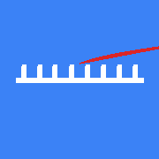

Test Status: Checking PWA icons for proper loading and dimensions
Icon Verification
Below are all the PWA icons that should be used by the manifest.json:
favicon.svg
SVG - Any size
icon-192.png
192x192 pixels
icon-512.png
512x512 pixels

apple-touch-icon.png
180x180 pixels
✅ Icons Loaded Successfully!
All PWA icons are loading correctly. If you can see the icons above, they should work in the manifest.
Manifest Test
Click the button below to test the manifest.json:
Next Steps
For Production:
1. Replace these placeholder icons with your actual app icons
2. Use the icon generator: scripts/icon-generator-simple.html
3. Test the PWA installation on your device